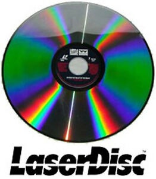

|  |
| LaserDisc |
| The LaserDisc is an interesting format. It did well against its competitiors originally and enjoyed many benefits compared to VHS or Betamax. It has much greater success in Asia than America, and let's not even talk about Europe. LaserDiscs were started in 1978 and continued production until 2009. It had many advantages, such as better playback, better audio, support for multiple audio tracks, and better video dependant on hardware. However, it started to fail against the might of the VHS when it came to recording video. VHS was able to record for lengths previously desired while LaserDiscs were stuck being sold by official sources. |
The closest I came into contact with LaserDiscs were in elementary school. My 5th grade social studies class watched this whale show on LaserDisc. I only remember it being LaserDisc thanks to the sheer size of the disc and comparing it to CDs or DVDs in my young mind. It isn't really something I'm interested in compared to floppies.
{kind=link}